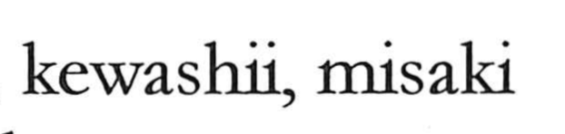

崎

Kun: saki, misaki, kewashii | On: ki
steep ・ promontory ・ cape
Explanation
A phono-semantic character, 崎 pairs the mountain determinative with 奇 as its phonetic. 奇 signals the On reading ki and also evokes a sense of leaning or instability. Set against the mountain element, the graph first pictured treacherous, steep places in the hills—a difficult, precipitous path—and by extension terrain marked by abrupt changes. From this grew its topographical use for land that juts into the water, hence saki/misaki “cape, promontory,” as seen in place names like Nagasaki. Related forms such as 埼 and 碕 are used with the same coastal sense, and because of its 奇 phonetic, 崎 can at times substitute for other 奇-based graphs, though in Japan it is chiefly the character for these steep headlands.